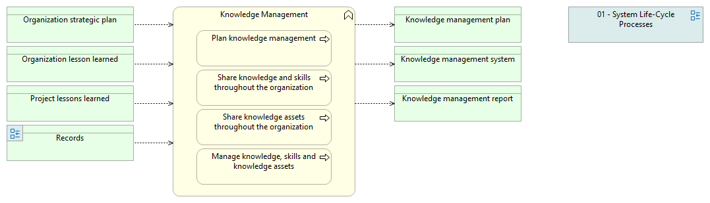

| de_Name | 04-06 Wissensmanagement |
| en_Name | 04-06 Knowledge Management |
| en_Desc | This view provides information on the Knowledge Management process in the systems engineering life cycle. By clicking on the process, you can review its purpose, while clicking on its inputs and outputs will show you their definitions. You can navigate back to the overview by clicking on the rectangular labeled "01 - System Life-Cycle Processes". Additionally, by clicking on the blue square in the box "Records", you can access the list of life cycle constraints. *** Source and Copyright *** The process purpose, the list of activities (yellow boxes): This product contains quotations from ISO/IEC/IEEE 15288:2015. © ISO. These quotations are reproduced with permission of the American National Standards Institute (ANSI) on behalf of the International Organization for Standardization. These quotations are explicitly marked with a copyright note. All rights reserved. Inputs, outputs, their definitions: This product contains quotations from the Book "INCOSE Systems Engineering Handbook: A Guide for System Life Cycle Processes and Activities, 4th Edition", ISBN: 978-1-118-99940-0, published by John Wiley & Sons, Inc., authored by David D. Walden, ESEP, Garry J. Roedler, ESEP, Kevin J. Forsberg, ESEP, R. Douglas Hamelin, Thomas M. Shortell, CSEP. Permission is granted by John Wiley & Sons, Inc. All rights reserved. |